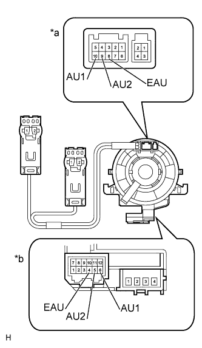

СИСТЕМА НАВИГАЦИИ (для моделей с DVD) > Цепь переключателей на рулевом колесе |
| 1.ПРОВЕРЬТЕ ПЕРЕКЛЮЧАТЕЛИ НА РУЛЕВОМ КОЛЕСЕ |
Снимите переключатель на рулевом колеса в сборе (Нажмите здесь)
Измерьте сопротивление в соответствии со значениями, приведенными в таблице ниже.
| Контакты для подключения диагностического прибора | Положение переключателя | Заданные условия |
| 10 (AU1) - 8 (EAU) | Ни один переключатель не нажат | 95-105 кОм |
| Нажатие выключателя "Seek+" (поиск+) | Менее 2,5 Ом | |
| Нажатие выключателя "Seek-" (поиск-) | 313 - 345 Ом | |
| Нажатие выключателя "Volume+" (громкость+) | 950-1050 Ом | |
| Нажатие выключателя "Volume-" (громкость-) | 2955 - 3265 Ом | |
| 9 (AU2) - 8 (EAU) | Ни один переключатель не нажат | 95-105 кОм |
| Нажатие переключателя "MODE" (режим) | Менее 2,5 Ом | |
| Нажатие выключателя "On Hook" (отключение от линии) | 313 - 345 Ом | |
| Нажатие переключателя "Off Hook" (подключение к линии) | 950-1050 Ом | |
| Нажатие выключателя "Voice" (голос) | 2955 - 3265 Ом |
|
| ||||
| OK | |
| 2.ПРОВЕРЬТЕ ВИТОЙ КАБЕЛЬ В СБОРЕ |
|  |
Снимите витой кабель в сборе (Нажмите здесь).
Измерьте сопротивление в соответствии со значениями, приведенными в таблице ниже.
| Контакты для подключения диагностического прибора | Режим | Заданные условия |
| 8 (EAU) - 4 (EAU) | Витой кабель повернут на 2,5 оборота против часовой стрелки | Менее 1 Ом |
| Витой кабель находится в центральном положении | ||
| Витой кабель повернут на 2,5 оборота по часовой стрелке | ||
| 10 (AU1) - 6 (AU1) | Витой кабель повернут на 2,5 оборота против часовой стрелки | |
| Витой кабель находится в центральном положении | ||
| Витой кабель повернут на 2,5 оборота по часовой стрелке | ||
| 9 (AU2) - 5 (AU2) | Витой кабель повернут на 2,5 оборота против часовой стрелки | |
| Витой кабель находится в центральном положении | ||
| Витой кабель повернут на 2,5 оборота по часовой стрелке |
| *a | Со стороны переключателей на рулевом колесе |
| *b | Со стороны проводки автомобиля |
|
| ||||
| OK | |
| 3.ПРОВЕРЬТЕ ЖГУТ ПРОВОДОВ И РАЗЪЕМ (ДИСПЛЕЙ МОДУЛЯ СИСТЕМЫ НАВИГАЦИИ И ИНДИКАЦИИ - ВИТОЙ КАБЕЛЬ) |
Отсоедините разъем H4 дисплея модуля системы навигации и индикации.
Отсоедините разъем G40 витого кабеля.
Измерьте сопротивление в соответствии со значениями, приведенными в таблице ниже.
| Контакты для подключения диагностического прибора | Условие | Заданные условия |
| H4-25 (SW1) - G40-6 (AU1) | Всегда | Менее 1 Ом |
| H4-24 (SW2) - G40-5 (AU2) | Всегда | Менее 1 Ом |
| H4-23 (SWG) - G40-4 (EAU) | Всегда | Менее 1 Ом |
| H4-25 (SW1) - масса | Всегда | 10 кОм или более |
| H4-24 (SW2) - масса | Всегда | 10 кОм или более |
| H4-23 (SWG) - масса | Всегда | 10 кОм или более |
|
| ||||
| OK | ||
| ||